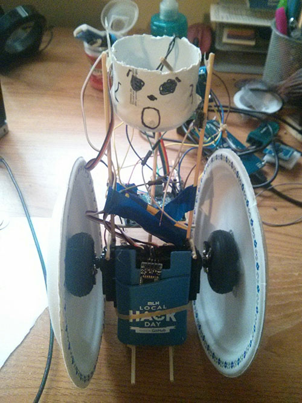
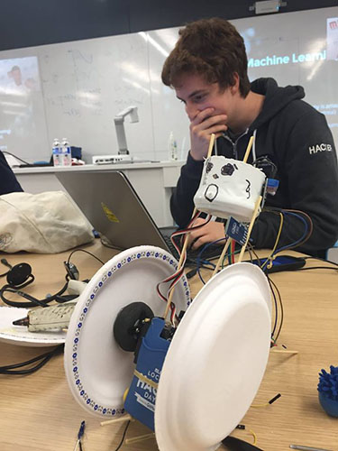

Lassonde Hackathon - Roambot
Roambot was a project I completed for Local Hack Day at York University in 8 hours.
The robot was controlled by a person's movement which were detected by an Xbox Kinect.
The computer sent the Kinect's command using UDP to an Android phone that was sitting
on the robot.The Android then sent the same instruction over Bluetooth to the Arduino
which controlled the motors to drive while also streaming video of what the robot sees
back to the computer (video was 3rd party). Worked independently.
Hardware Robot

Intense Hacking

Unfortunately no video of me jumping around in front of the Kinect to make the robot move. Sorry :(